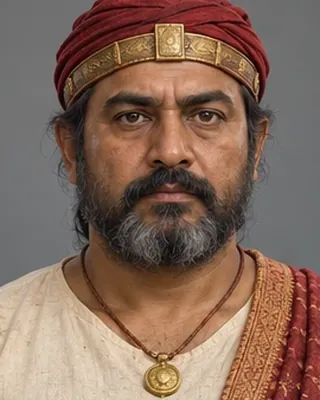

Sandhya (Kamateswar)
c. 1228–1260 (reconstructed) · King of Kamata

Founder of the Kamata kingdom. Took the throne in 1228 as a vassal of Delhi, then stopped paying tribute; captured and executed Yuzbak in 1257 and moved the capital from Kamarupanagara to Kamatapur after that.
Heritage University paper gives 1228–1265. Control over lands east of the Manas was loose. The reorganisation into the Kamata state is dated c. 1250–1270.
Record confidence: medium.